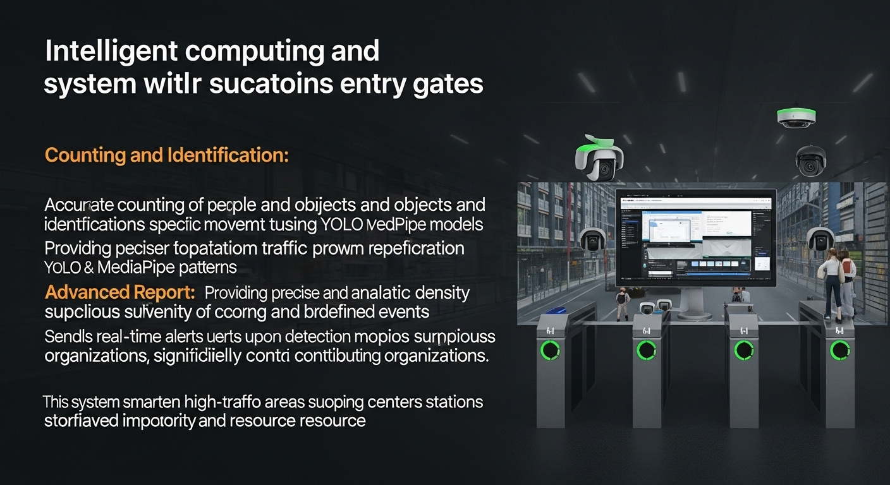
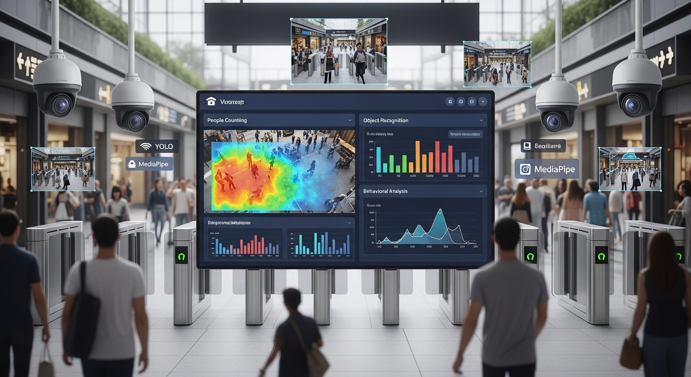

شمارش افراد بلادرنگ
این پروژه یک سیستم هوشمند برای شمارش افراد با استفاده از چندین دوربین RTSP است. این سامانه قادر است به صورت بلادرنگ تعداد افراد را در مکانهای مختلف تشخیص داده و گزارشهای ساعتی و روزانه تولید کند.
گالری تصاویر

داشبورد گزارشگیری

دیاگرام معماری سیستم

ورودی همزمان از ۶ دوربین